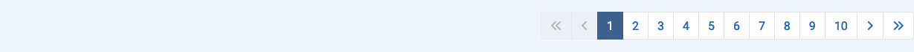

Цель¶¶
Большинство компонентов имеют представления в виде списков, которые отображают элементы из базы данных. Этих элементов может быть сотни, тысячи, а то и миллионы. По умолчанию Ограничение списка, количество элементов, показанных на одной странице результатов, обычно составляет 20. Если результатов больше, чем текущее ограничение, под каждой страницей результатов вы найдете строку Пагинации:

При выборе первого номера в строке пагинации, в списке будут показаны первые 20 результатов или столько результатов, сколько установлено в Ограничении списка. Выберите следующий номер или значок Далее (), чтобы перейти на следующую страницу элементов.
Максимальное количество страниц, отображаемых в одной строке пагинации, составляет 10. Однако, чтобы было легче перейти на следующую или вернуться на предыдущую страницу, отображаются номера страниц ниже и выше текущей страницы.
Вот снимок экрана со списком плагинов, перешедшим на страницу 10 с Ограничением списка, установленным на 5:

Иконки¶
- Перейти на Первую страницу.
- Перейти на Предыдущую страницу.
- Перейти на Следующую страницу.
- Перейти на Последнюю страницу.
На первой странице иконки Первой и Предыдущей страниц отключены. На последней странице иконки Следующей и Последней страниц отключены.
Переведено с помощью openai.com